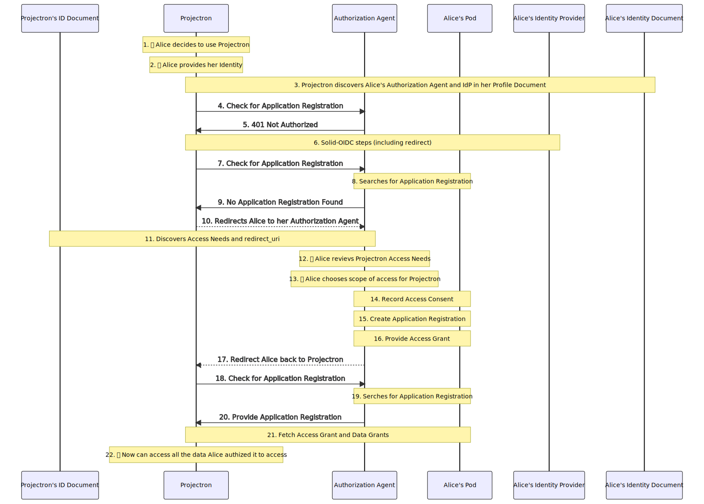

1. Introduction
Solid affords us the opportunity to create a valuable and powerful ecosystem where people and organizations retain control of their data, but are also able to put it to work and use it to its full potential. The fundamentals of Solid make this possible, but further definition of standard methods and mechanisms must be established to make it practical, intuitive, and secure.
Note: See Problems and Goals for Interoperability in Solid for an explanation of the problem space.
This specification details how Social Agents in the Solid ecosystem can read, write, and manage data stored in a Solid pod using disparate Applications.
§ 5 Agent Registrations details how Social Agents track and manage the other Agents they interact with.
§ 6 Data Registrations details how Social Agents register, organize, and lookup their data. Data is stored uniformly, avoiding complex physical hierarchies. Shape trees and shapes provide strong data validation and intuitive data boundaries.
§ 7 Authorization Flows provides the means for a Social Agent to grant other Applications and Social Agents access to data in their control.
-
§ 8 Access Needs let Social Agents and Applications express which data they need access to, and patterns to request those needs.
-
§ 9 Access Authorizations let Social Agents manage and track access they’ve granted to other Agents.
2. Agents
Agents are the primary actors in an interoperable Solid ecosystem.
An Agent is denoted by an identity. Dereferencing that identity leads to identity profile document, where a graph of useful information about the Agent can be found. This graph is used by the Agent as a starting point to look up their own data, as well as data that has been shared with them.
The Agent graph in an identity profile document is designed to be publicly accessible, but many of the things the Agent links to are designed to be private, or accessible only by others they have authorized.
An Agent can dereference the identity of another Agent to obtain the public information they need to interact with them.
Social Agents and Applications are specific types of Agents denoted by this specification.
3. Social Agents
A Social Agent is a strongly identifiable individual, group, or organization that can own or be responsible for data, and provide authorization to the access of that data by other Agents.
Most of a Social Agent’s information is stored in Registries.
A Registry is a place where a Social Agent can store and find different types of data, often for particular purposes. Each type of Registry serves a specific purpose or function.
A Social Agent stores a list of its Registries in a Registry Set, which must be a separate resource from the identity profile document that the Social Agent graph resides in so that it can be given more restrictive (i.e. non-public) permissions.
The identity profile document MUST be readable by the public. It MAY use any resource or subject names.
Inboxes MUST allow for other Social Agents or Applications to create resources. Inboxes SHOULD limit the Social Agents with create privileges to prevent denial of service, spam, or other unwanted conditions.
Class Definition - Shape Definition - Shape Tree Definition
| Property | Range | Description |
|---|---|---|
| hasRegistrySet | RegistrySet | Registry Set for the Social Agent |
| hasAuthorizationAgent | Application | The software used by the Agent to manage access to their data |
| hasInbox | ldp:inbox | A general inbox for messages sent to the Social Agent |
| hasAccessInbox | ldp:inbox | An inbox for access related messages sent to the Social Agent |
PREFIX rdf: <http://www.w3.org/1999/02/22-rdf-syntax-ns#> PREFIX rdfs: <http://www.w3.org/2000/01/rdf-schema#> PREFIX interop: <http://www.w3.org/ns/solid/interop#> PREFIX alice: <https://alice.example/> PREFIX alice-jarvis: <https://alice.jarvis.example/> PREFIX alice-auth: <https://auth.alice.example/> PREFIX alice-inbox: <https://alice.example/inbox/> alice : \#id a interop : Agent ; ######## Registry Sets ######## interop : hasRegistrySet alice : registries ; ######## Authorization Agent ######## interop : hasAuthorizationAgent alice-jarvis : ; ######## Inboxes ######## interop : hasInbox alice-inbox : general ; interop : hasAccessInbox alice-inbox : access .
3.1. Registry Set
A Registry Set links to all of the Registries owned by a given Social Agent. A non-public document, it is accessed by or on behalf of the Social Agent or their Trusted Agents via trusted Applications.
The Registry Set MAY use any resource or subject names. It SHOULD NOT be readable by the public. It SHOULD be accessible and manageable by the Social Agent that owns it, or other Social Agents that have received appropriate authorization, via authorized Applications.
Class Definition - Shape Definition - Shape Tree Definition
| Property | Range | Description |
|---|---|---|
| hasAgentRegistry | AgentRegistry | Agent Registry for the Social Agent |
| hasAuthorizationRegistry | AuthorizationRegistry | Authorization Registry for the Social Agent |
| hasDataRegistry | DataRegistry | Data Registry for the Social Agent |
PREFIX interop: <http://www.w3.org/ns/solid/interop#> PREFIX alice: <https://alice.example/> PREFIX alice-work: <https://work.alice.example/> PREFIX alice-personal: <https://personal.alice.example/> alice : registries a interop : RegistrySet ; interop : hasAgentRegistry alice : agents\/ ; interop : hasAuthorizationRegistry alice : authorization\/ ; interop : hasDataRegistry alice-work : data\/ , alice-personal : data\/ .
4. Applications
An Application is a software-based Agent that a Social Agent uses to access, manipulate, and manage the data in their control, as well as the data they’ve been granted access to.
The information in the identity profile document of an Application is used during § 7 Authorization Flows to help Social Agents determine whether they want to use that Application. It lets them know what kind of data the Application needs access to and why. This lets the Social Agent make an informed choice.
An Application identifies the types of data it requires access to by linking to Access Need Groups.
The identity profile document of an Application MUST be readable by the public, along with its thumbnail and any identified Access Need Groups. They MAY use any resource or subject names.
Class Definition - Shape Definition - Shape Tree Definition
| Property | Range | Description |
|---|---|---|
| applicationName | xsd:string | Name of the Application |
| applicationDescription | xsd:string | Description of the Application |
| applicationAuthor | SocialAgent | Social Agent that authored the Application |
| applicationThumbnail | binary image | Thumbnail for the Application |
| hasAccessNeedGroup | AccessNeedGroup | Access Need Group representing types of data the Application needs to operate |
projectron : \#id a interop : Application ; interop : applicationName "Projectron" ; interop : applicationDescription "Manage projects with ease" ; interop : applicationAuthor acme : \#id ; interop : applicationThumbnail acme : thumb.svg ; interop : hasAccessNeedGroup needs : need-group-pm .
5. Agent Registrations
Social Agents manage the other Social Agents and Applications they interact with by registering these Agents in their Agent Registry.
When a given Agent is the subject of an Access Authorization, an Access Grant is generated and stored in the Agent Registration for that Agent.
5.1. Social Agent Registration
A Social Agent Registration provides the Social Agent with a place to track and manage other Social Agents they interact with.
Social Agent Registrations are stored in an Agent Registry.
Class Definition - Shape Definition - Shape Tree Definition
| Property | Range | Description |
|---|---|---|
| registeredBy | SocialAgent | Social Agent that registered the Social Agent Registration |
| registeredWith | Application | Application used to create the Social Agent Registration |
| registeredAt | xsd:dateTime | Date and time the Social Agent Registration was created |
| updatedAt | xsd:dateTime | Date and time the Social Agent Registration was updated |
| registeredAgent | SocialAgent | The Social Agent that was registered |
| reciprocalRegistration | SocialAgentRegistration | The Social Agent Registration that registeredAgent maintains
for the Social Agent that owns this Registry
|
| hasAccessGrant | AccessGrant | Links to an Access Grant describing the access that has been
granted to the registeredAgent
|
alice-agents : c4562da9\/ a interop : SocialAgentRegistration ; interop : registeredBy alice : \#id ; interop : registeredWith jarvis : \#id ; interop : registeredAt "2020-04-04T20:15:47.000Z" ^^ xsd : dateTime ; interop : updatedAt "2020-04-04T21:11:33.000Z" ^^ xsd : dateTime ; interop : registeredAgent bob : \#id ; interop : reciprocalRegistration bob-agents : 255aa181\/ ; interop : hasAccessGrant alice-agents : c4562da9\/b6e125b8 .
5.2. Application Registration
An Application Registration provides the Social Agent with a place to maintain metadata, state, preferences, and other application-specific data associated with a given Application they have elected to use.
Application Registrations are stored in an Agent Registry.
Class Definition - Shape Definition - Shape Tree Definition
| Property | Range | Description |
|---|---|---|
| registeredBy | SocialAgent | Social Agent that registered the Application Registration |
| registeredWith | Application | Application used to create the Application Registration |
| registeredAt | xsd:dateTime | Date and time the Application Registration was created |
| updatedAt | xsd:dateTime | Date and time the Application Registration was updated |
| registeredAgent | Application | The Application that was registered |
| hasAccessGrant | AccessGrant | Links to an Access Grant describing the access that has been
granted to the registeredAgent
|
alice-agents : 2f2f3628\/ a interop : ApplicationRegistration ; interop : registeredBy alice : \#id ; interop : registeredWith jarvis : \#id ; interop : registeredAt "2020-04-04T20:15:47.000Z" ^^ xsd : dateTime ; interop : updatedAt "2020-04-04T21:11:33.000Z" ^^ xsd : dateTime ; interop : registeredAgent projectron : \#id ; interop : hasAccessGrant alice-agents : 2f2f3628\/27eae14b .
5.3. Agent Registry
An Agent Registry is a collection of Agent Registrations.
Each Application a Social Agent interacts with has an Application Registration.
Each Social Agent a Social Agent interacts with has a Social Agent Registration.
The Agent Registry is linked to a Social Agent via their Registry Set.
Class Definition - Shape Definition - Shape Tree Definition
| Property | Range | Description |
|---|---|---|
| hasSocialAgentRegistration | SocialAgentRegistration | Link to an associated Social Agent Registration for a given Social Agent |
| hasApplicationRegistration | ApplicationRegistration | Link to an associated Application Registration for a given Application |
alice-agents : a interop : AgentRegistry ; interop : hasSocialAgentRegistration alice-agents : c4562da9\/ , # Bob alice-agents : b49afcdf\/ , # Sarah alice-agents : 4ae3abf8\/ ; # Jose interop : hasApplicationRegistration alice-agents : 2f2f3628\/ , # Projectron alice-agents : b5eea7bb\/ , # Jarvis
5.3.1. Resource Hierarchy
The Agent Registry MAY use any resource or subject name.
The resource name for an Agent Registration SHOULD be unpredictable.
The interop:registeredAgent of a given Agent Registration SHOULD have acl:Read access to that Agent Registration.
6. Data Registrations
Data Registrations let Social Agents store and manage the data they control. Data of various types is organized and stored in a uniform way to aid validation, authorization, discovery, and more.
Complex hierarchies that hinder interoperability are avoided by storing data in a relatively flat hierarchy. This creates natural data boundaries that make data storage and authorization more intuitive.
6.1. Data Registration
A Data Registration provides the Social Agent with a place to store Data Instances that conform to the registered shape tree of that registration. Data Registrations are stored in a Data Registry.
A Data Instance is a unique, stored instance of data
in a Data Registration that conforms to it’s interop:registeredShapeTree.
Each Data Instance is linked to the Data Registration via the ldp:contains property.
Class Definition - Shape Definition - Shape Tree Definition
| Property | Range | Description |
|---|---|---|
| registeredBy | SocialAgent | Social Agent that registered the Data Registration |
| registeredWith | Application | Application used to create the Data Registration |
| registeredAt | xsd:dateTime | Date and time the Data Registration was created |
| updatedAt | xsd:dateTime | Date and time the Data Registration was updated |
| registeredShapeTree | st:ShapeTree | The Shape Tree that was registered |
alice-work-data : 8501f084\/ a interop : DataRegistration ; interop : registeredBy alice : \#id ; interop : registeredWith jarvis : \#id ; interop : registeredAt "2020-04-04T20:15:47.000Z" ^^ xsd : dateTime ; interop : updatedAt "2020-04-04T21:11:33.000Z" ^^ xsd : dateTime ; interop : registeredShapeTree pm-shapetree : ProjectTree .
6.2. Data Registry
A Data Registry is a collection of Data Registrations, each of which represents a unique type of data, identified by a shape tree.
A Data Registry can be used for basic discovery, but it is not designed nor intended to be an efficient means to query or index data. However, it is intended to be used as reliable source data for different query engines or indexing schemes.
A Data Registry is linked to a Social Agent via their Registry Set.
Class Definition - Shape Definition - Shape Tree Definition
| Property | Range | Description |
|---|---|---|
| hasDataRegistration | DataRegistration | Link to an associated Data Registration |
alice-work-data : a interop : DataRegistry ; interop : hasDataRegistration alice-work-data : 8501f084\/ , alice-work-data : df4ab227\/ .
6.2.1. Resource Hierarchy
| Resource | Class | Shape | Shape Tree |
|---|---|---|---|
data/
| DataRegistry | DataRegistryShape | DataRegistryTree |
-- 8501f084/
| DataRegistration | DataRegistrationShape | DataRegistrationTree, ProjectRegistrationTree |
------ 16e1eae9
| Project | ProjectShape | ProjectTree |
------ 886785d2
| Project | ProjectShape | ProjectTree |
------ dae5015c
| Project | ProjectShape | ProjectTree |
-- df4ab227/
| DataRegistration | DataRegistrationShape | DataRegistrationTree, TaskRegistrationTree |
------ 9b60a354
| Task | TaskShape | TaskTree |
------ 6e545b74
| Task | TaskShape | TaskTree |
------ d33e01c8
| Task | TaskShape | TaskTree |
------ 927108fa
| Task | TaskShape | TaskTree |
------ 180dda0b
| Task | TaskShape | TaskTree |
The Data Registry resource MAY use any resource or subject name.
The resource names for Data Registrations and Data Instances SHOULD be unpredictable.
A Data Registration container MUST contain conformant instances of the shape tree associated with the Data Registration via interop:registeredShapeTree.
Two complementary shape trees MUST be assigned to the same Data Registration container to ensure that it conforms to general validation requirements, and to ensure that it only contains Data Instances of the registered shape tree identified by interop:registeredShapeTree.
In the figure below, the combination of a DataRegistrationTree and ProjectRegistrationTree on the same Data Registration can be observed. Furthermore, an example of a contained Data Instance is provided, which conforms to ProjectTree per the directive in ProjectRegistrationTree.
-- 8501f084/
| |
Contents of the Data Registration
|
Ensure the container resource for the Data Registration conforms to interops#DataRegistrationShape.
And also ensure the Data Registration only
contains resources that conform to
|
------ 16e1eae9
| |
Contents of the Data Instance
|
Ensure the resource for the Data Instance conforms to pm:ProjectTree.
|
7. Authorization Flows
Authorization represents several key elements that work together to grant, adjust, and rescind access to data controlled by a Social Agent.
Key authorization flows are facilitated by an Authorization Agent on behalf of a Social Agent.
| Flow | Scenario |
|---|---|
| Application Requests Access | A Social Agent elects to use a new Application. The Application prompts the Social Agent for access to data in their control. Access Needs are provided by the Application. |
| Another Social Agent Requests Access | A Social Agent requests access to data owned by another Social Agent. Access Needs are provided in an Access Request. Resultant notification is provided through an Access Receipt. |
| Social Agent Shares Access | A Social Agent using an Application elects to share access to data in their control with another Social Agent that did not request it. Access Needs are provided by Application. Notification that access was shared is provided through an Access Receipt. |
Each authorization flow listed above uses the following pattern:
-
A requesting Agent expresses their Access Needs to a given Social Agent for data in their control.
-
Access Needs are processed and presented to the Social Agent by their Authorization Agent.
-
The Social Agent’s access decisions are captured and enacted through § 9 Access Authorizations.
-
The requesting Agent looks for an Access Grant stored in a corresponding Agent Registration in the Agent Registry of the data owner. This Access Grant tells them exactly what they have access to.
Slight variations concerning where Access Needs are sourced from, and how notification of access is provided, are the only differences from one flow to another.
| Step | Description |
|---|---|
| 1 | Alice’s finds an Application called Projectron that she’d like to use to manage her Projects and Tasks. |
| 2 | Alice provides her WebID to Projectron |
| 3 | Projectron dereferences her WebID and retrieves her IdP and Authorization Agent from her Identity Profile Document |
| 4 | Projectron asks Alice’s Authorization Agent if Alice already has an Application Registration for Projectron |
| 5 | Projectron receives a 401 Not Authorized, because Alice / Projectron needs to authenticate first
|
| 6 | Projectron initiates a [SOLID-OIDC] flow with Alice’s Identity Provider and receives a DPOP-bound Access Token and Proof |
| 7 | Now authenticated, Projectron asks Alice’s Authorization Agent again for a Projectron Application Registration |
| 8 | Alice’s Authorization Agent checks the Agent Registry in Alice’s Pod for a Projectron Application Registration |
| 9 | No Application Registration for Projectron is found. Projectron now knows that Alice hasn’t given it permission to access her data, so it must ask. |
| 10 | Projectron redirects Alice to her Authorization Agent, supplying its identity for context |
| 11 | Alice’s Authorization Agent dereferences the supplied Projectron identity, retrieving Projection’s Application profile graph and corresponding Access Need Groups from the Identity Profile Document,
as well as redirect_uri
|
| 12 | Alice’s Authorization Agent presents the Access Need Groups from Projectron’s Application profile graph, so that Alice understands what kind of data is being requested, and why. |
| 13 | Alice’s chooses the scope of access that Projectron will receive to the data it has asked for access to via the presented Access Needs. |
| 14-16 | Alice’s Authorization Agent records her decision as an Access Authorization in Alice’s Authorization Registry. An Application Registration is created for Projectron in Alice’s Agent Registry. An Access Grant and corresponding Data Grants are generated from the Access Authorization and stored in the Projectron Application Registration. |
| 17 | Alice’s Authorization Agent redirects her back to Projectron now that the appropriate access has been granted |
| 18 | Projectron asks Alice’s Authorization Agent again for a Projectron Application Registration |
| 19 | Alice’s Authorization Agent finds the newly created Projectron Application Registration in the Agent Registry in Alice’s Pod |
| 20 | Alice’s Authorization Agent provides the URI of the Application Registration to Projectron |
| 21 | Projectron learns what access it received through the Access Grant in Alice’s Projectron Application Registration |
| 22 | Projectron may now function as intended, within the scope of authorization it was given by Alice. |

7.1. Authorization Agent
An Authorization Agent is an Application designated by a Social Agent to be responsible for managing the access to data under their control, linked via their Registry Set.
Any requests for access to the Social Agent are processed by the Authorization Agent. Similarly, any decisions by the Social Agent to share data with another Agent are processed by the Authorization Agent.
7.1.1. Authorization Agent Discovery
The Authorization Agent for a given Social Agent can be discovered
by de-referencing the identity of that Social Agent, and extracting
the object value of the interop:hasAuthorizationAgent statement from the Social Agent graph in the returned identity profile document.
The extracted Authorization Agent IRI MUST be unique to that Social Agent. In scenarios where the Authorization Agent services multiple Social Agents, this may be facilitated through a unique sub-domain (see example below) or path.
alice : \#id a interop : Agent ; ######## Registry Sets ######## interop : hasRegistrySet alice : registries ; ######## Authorization Agent ######## interop : hasAuthorizationAgent alice-jarvis : ; ######## Inboxes ######## interop : hasInbox alice-inbox : general ; interop : hasAccessInbox alice-inbox : access .
7.1.2. Agent Registration Discovery
An Agent that needs to discover whether a target Social Agent has a corresponding Agent Registration for them can query the Authorization Agent for that target Social Agent.
To discover a corresponding Agent Regsitration the requesting Agent may perform an HTTP HEAD or HTTP GET request on the IRI of the Authorization Agent for the target Social Agent.
The response will include an HTTP Link header relating the Agent Registration to the Agent making the request via the http://www.w3.org/ns/solid/interop#registeredAgent link relation.
HEAD / HTTP / 1.1 Host : alice.jarvis.example Authorization : DPoP ....
HTTP / 1.1 200 OK Link : <https://projectron.example/#app>; anchor="https://alice.jarvis.example/bcf22534-0187-4ae4-b88f-fe0f9fa96659"; rel="http://www.w3.org/ns/solid/interop#registeredAgent"
8. Access Needs
Social Agents and Applications in the ecosystem often require access to data controlled by some other Social Agent. Consequently, a common way to explain and communicate data needs between these parties is required.
A given Social Agent or Application expresses their access needs by providing one or more Access Need Groups to the Social Agent controlling the data they require access to. The channels through which these may be communicated are detailed in § 7 Authorization Flows.
Each Access Need Group is associated with one or more Access Needs.
Access Needs represent a request to access a particular type of data identified by shape tree type, corresponding with Data Registrations in a Data Registry, an Identity Profile Document, or a Registry Set.
Access Need Groups are essential to a Social Agent’s decision-making when determining whether to grant access.
8.1. Access Need Group
An Access Need Group is a collection of Access Needs used to communicate an access request to Social Agents.
Access Need Groups are described using language-specific Access Need Group Descriptions.
Class Definition - Shape Definition
| Property | Range | Description |
|---|---|---|
| hasAccessDescriptionSet | AccessDescriptionSet | Links to an Access Description Set containing Access Need Group Descriptions and Access Need Descriptions in the preferred language of the Social Agent |
| accessNecessity | interop:AccessRequired, interop:AccessOptional
| Necessity of the access to the requesting party |
| accessScenario | interop:PersonalAccess, interop:SharedAccess
| Context in which the access group should be presented |
| authenticatesAs | interop:SocialAgent or interop:Application
| Access will be granted to the Social Agent or Application |
| hasAccessNeed | AccessNeed | Link to an Access Need |
<#need-group-pm> a interop : AccessNeedGroup ; interop : accessNecessity interop : accessRequired ; interop : accessScenario interop : PersonalAccess ; interop : authenticatesAs interop : SocialAgent ; interop : hasAccessDescriptionSet projectron : access-en , projectron : access-es , projectron : access-nl , projectron : access-fr , projectron : access-ru , projectron : access-ko ; interop : hasAccessNeed <#need-project> . <#need-project> a interop : AccessNeed ; interop : registeredShapeTree pm-shapetrees : ProjectTree ; interop : accessNecessity interop : accessRequired ; interop : accessMode acl : Read , acl : Create ; interop : creatorAccessMode acl : Update , acl : Delete . <#need-task> a interop : AccessNeed ; interop : registeredShapeTree pm-shapetrees : TaskTree ; interop : accessNecessity interop : accessRequired ; interop : accessMode acl : Read , acl : Create ; interop : creatorAccessMode acl : Update , acl : Delete ; interop : inheritsFromNeed <#need-project> .
8.2. Access Need
An Access Need represents the requirement of one specific type of data represented by a shape tree, as part of an Access Need Group.
It is often the case that a shape tree associated with an Access Need references other shape trees, providing a path to request access to related types. Consequently, Access Needs can be specified that inherit from other Access Needs through a shape tree reference.
Specific Data Instances may be requested by explicitly associating them with the Access Need.
Access Needs are described using language-specific Access Need Descriptions.
Class Definition - Shape Definition
| Property | Range | Description |
|---|---|---|
| registeredShapeTree | st:ShapeTree
| The shape tree requested by the Access Need |
| accessMode | acl:Read, acl:Write, acl:Update, acl:Create, acl:Delete, acl:Append
| Requested modes of access for the Access Need |
| creatorAccessMode | acl:Read, acl:Write, acl:Update, acl:Create, acl:Delete, acl:Append
| Requested mode of access for the creator of a Data Instance.
Adds to the set of modes linked via interop:accessMode. Only valid when accessMode includes acl:Create, acl:Write, or acl:Append
|
| accessNecessity | interop:AccessRequired, interop:AccessOptional
| Necessity of the access to the requesting party |
| hasDataInstance | Data Instance | Request specific Data Instance of the registered shape tree. Requires advance knowledge of the Data Instance |
| inheritsFromNeed | AccessNeed | Links to another Access Need whose registeredShapeTree references the shape tree associated with the current Access Need. |
<#need-project> a interop : AccessNeed ; interop : registeredShapeTree pm-shapetrees : ProjectTree ; interop : accessNecessity interop : accessRequired ; interop : accessMode acl : Read , acl : Create ; interop : creatorAccessMode acl : Update , acl : Delete . <#need-task> a interop : AccessNeed ; interop : registeredShapeTree pm-shapetrees : TaskTree ; interop : accessNecessity interop : accessRequired ; interop : accessMode acl : Read , acl : Create ; interop : creatorAccessMode acl : Update , acl : Delete ; interop : inheritsFromNeed <#need-project> .
8.3. Access Descriptions
8.3.1. Access Need Group Description
An Access Need Group Description provides a short label or title and a more in-depth description that explains why a given Access Need Group is being requested of a Social Agent.
Class Definition - Shape Definition
| Property | Range | Description |
|---|---|---|
| inAccessDescriptionSet | AccessDescriptionSet | Access Description Set the description is part of |
| hasAccessNeedGroup | AccessNeedGroup | Access Need Group the description applies to |
| skos:preflabel | xsd:string
| Short label (title) for the Access Need Group |
| skos:definition | xsd:string
| Description of why the Access Need Group requires the access it is requesting. |
<#en-need-group-pm> a interop : AccessNeedGroupDescription ; interop : inAccessDescriptionSet <> ; interop : hasAccessNeedGroup projectron : need-group-pm ; skos : prefLabel "Read and Contribute to Projects" @ en; skos : description "Allow Projectron to read the Projects you select, and create new ones. Projectron won't modify existing data, but can add more." @ en.
8.3.2. Access Need Description
An Access Need Description provides a specific explanation of why that data type is being requested by a given Access Need.
Class Definition - Shape Definition
| Property | Range | Description |
|---|---|---|
| inAccessDescriptionSet | AccessDescriptionSet | Access Description Set the description is part of |
| hasAccessNeed | AccessNeed | Access Need the description applies to |
| skos:prefLabel | xsd:string
| Specific explanation of why that data type is being requested |
<#en-need-project> a interop : AccessNeedDescription ; interop : inAccessDescriptionSet <> ; interop : hasAccessNeed projectron : need-project ; skos : prefLabel "Access to Projects is essential for Projectron to perform its core function of Project Management" @ en.
8.3.3. Access Description Set
An Access Description Set is a collection of Access Need Group Descriptions and Access Need Descriptions.
Class Definition - Shape Definition
| Property | Range | Description |
|---|---|---|
| usesLanguage | xsd:language
| Language that the Access Need Group Descriptions and Access Needs in the Set use |
<> a interop : AccessDescriptionSet ; interop : usesLanguage "en" ^^ xsd : language . <#en-need-group-pm> a interop : AccessNeedGroupDescription ; interop : inAccessDescriptionSet <> ; interop : hasAccessNeedGroup projectron : need-group-pm ; skos : prefLabel "Read and Contribute to Projects" @ en; skos : description "Allow Projectron to read the Projects you select, and create new ones. Projectron won't modify existing data, but can add more." @ en. <#en-need-project> a interop : AccessNeedDescription ; interop : inAccessDescriptionSet <> ; interop : hasAccessNeed projectron : need-project ; skos : prefLabel "Access to Projects is essential for Projectron to perform its core function of Project Management" @ en. <#en-need-task> a interop : AccessNeedDescription ; interop : inAccessDescriptionSet <> ; interop : hasAccessNeed projectron : need-task ; skos : prefLabel "Access to Tasks allows Projectron to identify and manage the work to be done in a given Project." @ en.
8.4. Access Request
An Access Request is used to send Access Need Groups from one Agent to another.
Class Definition - Shape Definition
| Property | Range | Description |
|---|---|---|
| fromSocialAgent | SocialAgent | The Social Agent who sent the Access Request |
| toSocialAgent | SocialAgent | The Social Agent the Access Request is meant for |
| hasAccessNeedGroup | AccessNeedGroup | One or more Access Need Groups detailing the access requested |
<> a interop : AccessRequest ; interop : fromSocialAgent alice : \#id ; interop : toSocialAgent bob : \#id ; interop : hasAccessNeedGroup projectron : \#need-group-pm .
9. Access Authorizations
Access Authorizations record a Social Agent’s decision to grant access to some portion of the data in their control to another Social Agent or Application. Access Authorizations are not shared with a grantee.
Access Grants are generated from Access Authorizations. They are shared with a given Agent to communicate the scope of access that has been granted to them.
9.1. Access Authorization
An Access Authorization records the decision of a Social Agent to grant access to some portion of data in their control to another Agent.
Access Authorizations should not be shared with the Agent that has been granted access. Access Grants are generated from Access Authorizations, and are appropriate to share with the grantee.
Access Authorizations are recorded in a Social Agent’s Authorization Registry.
Access Authorizations are immutable. If an Access Authorization for an Agent needs to change, it should be replaced.
If an Access Authorization is replaced, history may be retained by unlinking the
previous Access Authorization from the Authorization Registry, and linking
to it from the replacement Access Authorization via interop:replaces.
Class Definition - Shape Definition - Shape Tree Definition
| Property | Range | Description |
|---|---|---|
| grantedBy | SocialAgent | Social Agent that granted the Access Authorization |
| grantedWith | Application | Application used to grant the Access Authorization |
| grantedAt | xsd:dateTime | Date and time the Access Authorization was granted |
| grantee | Agent | The Social Agent or Application that has received authorization |
| hasAccessNeedGroup | AccessNeedGroup | An Access Need Group used to communicate the Access Needs that the Access Authorization is satisfying |
| hasDataAuthorization | DataAuthorization | Authorization for a specific type of data |
| replaces | AccessAuthorization | Previous Access Authorization replaced by current instance |
alice-authorization : e2765d6c a interop : AccessAuthorization ; interop : grantedBy alice : \#id ; interop : grantedWith jarvis : \#id ; interop : grantedAt "2020-09-05T06:15:01Z" ^^ xsd : dateTime ; interop : grantee projectron : \#id ; interop : hasAccessNeedGroup projectron : \#d8219b1f ; interop : hasDataAuthorization alice-authorization : 54a1b6a0 , alice-authorization : 0e4cb692 .
alice-authorization : 4460dce3 a interop : AccessAuthorization ; interop : grantedBy alice : \#id ; interop : grantedWith jarvis : \#id ; interop : grantedAt "2020-09-05T06:15:01Z" ^^ xsd : dateTime ; interop : grantee bob : \#id ; interop : hasAccessNeedGroup projectron : \#d8219b1f ; interop : hasDataAuthorization alice-authorization : f800b10c , alice-authorization : ec6057d9 .
9.2. Data Authorization
A Data Authorization records the decision of a Social Agent to grant access to a specific type of data in their control, identified by a Shape Tree. They are always associated with a single Access Authorization.
Data Authorizations should not be shared with the Agent that has been granted access. Data Grants are generated from Data Authorizations, and are appropriate to share with the grantee.
Data Authorizations are immutable. If a Data Authorization needs to change, it should be replaced.
Class Definition - Shape Definition - Shape Tree Definition
| Property | Range | Description |
|---|---|---|
| dataOwner | SocialAgent | Social Agent that owns the data being authorized |
| grantee | Agent | The Social Agent or Application that has received authorization |
| registeredShapeTree | st:ShapeTree | Shape Tree representing the type of data being authorized |
| accessMode | acl:Read, acl:Write, acl:Update, acl:Create, acl:Delete, acl:Append
| Modes of access granted to the authorized data |
| creatorAccessMode | acl:Read, acl:Write, acl:Update, acl:Create, acl:Delete, acl:Append
| Additional access mode assigned to the creator of a
data instance. Adds to the set of modes linked via interop:accessMode. Only valid when accessMode includes acl:Create, acl:Write, or acl:Append
|
| scopeOfAuthorization | interop:All, interop:AllFromAgent, interop:AllFromRegistry, interop:SelectedFromRegistry, interop:Inherited | Identifies the access scope of the Data Authorization |
| hasDataRegistration | A Data Registration for registeredShapeTree
| Links to a Data Registration of registeredShapeTree in a Data Registry that is a subject of the current Data Authorization. |
| hasDataInstance | Data instance of registeredShapeTree
| Links to a Data Instance of registeredShapeTree in a Data Registry. |
| satisfiesAccessNeed | AccessNeed | Links to the Access Need satisfied by the Data Authorization |
| inheritsFromAuthorization | DataAuthorization | Links to a parent Data Authorization whose registeredShapeTree references the shape tree associated with the current Data Authorization. |
alice-authorization : 54a1b6a0 a interop : DataAuthorization ; interop : dataOwner alice : \#id ; interop : grantee projectron : \#id ; interop : registeredShapeTree pm-shapetrees : ProjectTree ; interop : accessMode acl : Read , acl : Create ; interop : creatorAccessMode acl : Update , acl : Delete ; interop : scopeOfAuthorization interop : All ; interop : satisfiesAccessNeed projectron : \#ac54ff1e .
alice-authorization : 0e4cb692 a interop : DataAuthorization ; interop : dataOwner alice : \#id ; interop : grantee projectron : \#id ; interop : registeredShapeTree pm-shapetrees : TaskTree ; interop : accessMode acl : Read , acl : Create ; interop : creatorAccessMode acl : Update , acl : Delete ; interop : scopeOfAuthorization interop : Inherited ; interop : satisfiesAccessNeed projectron : \#9462959c ; interop : inheritsFromAuthorization alice-authorization : 54a1b6a0 .
9.3. Access Grant
An Access Grant provides an Agent with a detailed description of access that has been granted to them. Access Grants are generated from Access Authorizations, and are stored in the Agent Registry of the Data Owner.
Each Access Grant has one or more Data Grants, each of which represents access granted to a specific type of data.
Access Grants are immutable. If an Access Grant needs to change, it must be replaced.
Class Definition - Shape Definition - Shape Tree Definition
| Property | Range | Description |
|---|---|---|
| grantedBy | SocialAgent | Social Agent that granted the Access Grant |
| grantedAt | xsd:dateTime | Date and time the Access Grant was granted |
| grantee | Agent | Links to the Social Agent or Application that was granted access. |
| hasAccessNeedGroup | AccessNeedGroup | Links to an Access Need Group associated with the Access Grant. |
| hasDataGrant | DataGrant | Links to a Data Grant associated with the Access Grant. |
alice-projectron : 27eae14b a interop : AccessGrant ; interop : grantedBy alice : \#id ; interop : grantedAt "2020-04-04T20:15:47.000Z" ^^ xsd : dateTime ; interop : grantee projectron : \#id ; interop : hasAccessNeedGroup projectron : \#d8219b1f ; interop : hasDataGrant alice-projectron : 40d038ea , alice-projectron : 0945218b , alice-projectron : fe818190 , alice-projectron : 017d6a07 .
9.4. Data Grant
A Data Grant provides an Agent with a detailed description of access that has been granted to them for a specific type of data, identified by a Shape Tree. Each Data Grant is associated with a single Access Grant.
A Data Grant may inherit from another Data Grant, when the shape tree associated with the "parent" Data Grant has one or more Shape Tree References.
Each Data Grant has an assigned scope (interop:scopeOfGrant), which
determines how permissions are assigned.
When creating a Data Grant, there should be an Access Need linked
via interop:satisfiesAccessNeed with the same interop:registeredShapeTree.
When a Social Agent grants another Agent access to data that was shared with them, a Delegated Data Grant is used instead.
Data Grants are immutable. If a Data Grant needs to change, it should be replaced.
Class Definition - Shape Definition - Shape Tree Definition
| Property | Range | Description |
|---|---|---|
| dataOwner | SocialAgent | Social Agent that owns the data being granted |
| grantee | Agent | The Social Agent or Application that was granted access. |
| registeredShapeTree | st:ShapeTree | Data Registration for the shape tree that access will be granted to |
| hasDataRegistration | DataRegistration | Data Registration for registeredShapeTree that the Data Grant applies to
|
| accessMode | acl:Read, acl:Write, acl:Update, acl:Create, acl:Delete, acl:Append
| Modes of access granted to the target data at hasDataRegistration |
| creatorAccessMode | acl:Read, acl:Write, acl:Update, acl:Create, acl:Delete, acl:Append
| Additional access mode assigned to the creator of a
data instance. Adds to the set of modes linked via interop:accessMode. Only valid when accessMode includes acl:Create, acl:Write, or acl:Append
|
| scopeOfGrant | interop:All, interop:AllFromAgent, interop:AllFromRegistry, interop:SelectedFromRegistry, interop:Inherited | Identifies the access scope of the Data Grant |
| satisfiesAccessNeed | AccessNeed | Links to the Access Need satisfied by the Data Grant |
| hasDataInstance | Instance of registeredShapeTree | Links to a Data Instance of registeredShapeTree. |
| inheritsFromGrant | DataGrant | Links to another Data Grant whose registeredShapeTree references the shape tree associated with the current Data Grant. |
alice-projectron : 40d038ea a interop : DataGrant ; interop : dataOwner alice : \#id ; interop : grantee projectron : \#id ; interop : registeredShapeTree pm-shapetrees : ProjectTree ; interop : hasDataRegistration alice-work-data : 8501f084\/ ; interop : satisfiesAccessNeed projectron : \#ac54ff1e ; interop : accessMode acl : Read , acl : Create ; interop : creatorAccessMode acl : Update , acl : Delete ; interop : scopeOfGrant interop : AllFromRegistry .
a interop : DataGrant ; interop : dataOwner alice : \#id ; interop : grantee projectron : \#id ; interop : registeredShapeTree pm-shapetrees : TaskTree ; interop : hasDataRegistration alice-work-data : df4ab227\/ ; interop : satisfiesAccessNeed projectron : \#9462959c ; interop : accessMode acl : Read , acl : Create ; interop : creatorAccessMode acl : Update , acl : Delete ; interop : scopeOfGrant interop : Inherited ; interop : inheritsFromGrant alice-projectron : 40d038ea .
9.5. Delegated Data Grant
A Delegated Data Grant is a sub-class of Data Grant used when a grantee re-shares or "delegates" access they’ve received to another Agent. The most common use case is when Alice shares access with Bob, and Bob delegates that access to his project management application.
Delegated Data Grants are immutable. If a Delegated Data Grant needs to change, it should be replaced.
Class Definition - Shape Definition - Shape Tree Definition
| Property | Range | Description |
|---|---|---|
| delegationOfGrant | DataGrant | Data Grant that is being delegated |
alice-projectron : fe818190 a interop : DelegatedDataGrant ; interop : dataOwner bob : \#id ; interop : grantee projectron : \#id ; interop : registeredShapeTree pm-shapetrees : ProjectTree ; interop : hasDataRegistration bob-work-data : 08a99a10\/ ; interop : satisfiesAccessNeed projectron : \#ac54ff1e ; interop : accessMode acl : Read , acl : Create ; interop : creatorAccessMode acl : Update , acl : Delete ; interop : scopeOfGrant interop : AllFromRegistry ; interop : delegationOfGrant bob-alice : b2b6a645 .
alice-projectron : 017d6a07 a interop : DelegatedDataGrant ; interop : dataOwner bob : \#id ; interop : grantee projectron : \#id ; interop : registeredShapeTree pm-shapetrees : TaskTree ; interop : hasDataRegistration bob-work-data : 45e092cf\/ ; interop : satisfiesAccessNeed projectron : \#9462959c ; interop : accessMode acl : Read , acl : Create ; interop : creatorAccessMode acl : Update , acl : Delete ; interop : scopeOfGrant interop : Inherited ; interop : inheritsFromGrant alice-projectron : fe818190 ; interop : delegationOfGrant bob-alice : d5b5760c .
9.6. Data Access Scopes
Each Data Authorization applies to a specific type of data,
identified by a shape tree. The amount of access authorized for data
of that type is specified by the Access Scope, via interop:scopeOfAuthorization.
Data Grants are generated from a given Data Authorization based on access scope and other supporting criteria detailed below.
Each Data Grant corresponds to a specific Data Registration in a Data Registry, and has an associated access scope and access modes.
This specification uses some access modes in the acl: namespace that
have not been adopted to demonstrate the most secure and accurate
expression of a Social Agent’s authorization. Discussions are underway to add these modes.
[WAC] does not have any mechanism to extend or modify inherited permissions.
| Scope | Authorization | Grant | Description |
|---|---|---|---|
All
| Yes | No | All of the owner’s data of a specified type, and all data shared with the owner of that type, across the owner’s registries |
AllFromAgent
| Yes | No | All data of a given type shared by a specified Social Agent with the owner, across that Social Agent’s registries |
AllFromRegistry
| Yes | Yes | All of the data owner’s data of a specified type in a specified Data Registry |
SelectedFromRegistry
| Yes | Yes | Only specified Data Instances of the data owner’s of a given type in a specified Data Registry |
Inherited
| Yes | Yes | Only Data Instances of the data owner’s that are associated with Data Instances allowed by another authorization or grant |
9.6.1. All
The interop:All access scope includes all data of a specified type
belonging to a given data owner, and all data of that same type shared with the data
owner, across all of the data owner’s registries.
Shapes: DataAuthorizationAllShape
The follow example illustrates Alice’s authorization to give Projectron access to
data of type pm-shapetrees:ProjectTree with a scope of interop:All. Since
Alice has two Data Registries and Bob has shared projects with her, several Data Grants will be generated from this Data Authorization and shared
with Projectron.
Note: interop:All is only valid for a Data Authorization.
Generated Data Grants use the more specific interop:AllFromRegistry for each unique Data Registry, including Bob’s.
alice-authorization : 54a1b6a0 a interop : DataAuthorization ; interop : dataOwner alice : \#id ; interop : grantee projectron : \#id ; interop : registeredShapeTree pm-shapetrees : ProjectTree ; interop : accessMode acl : Read , acl : Create ; interop : creatorAccessMode acl : Update , acl : Delete ; interop : scopeOfAuthorization interop : All ; interop : satisfiesAccessNeed projectron : \#ac54ff1e .
alice-projectron : 40d038ea a interop : DataGrant ; interop : dataOwner alice : \#id ; interop : grantee projectron : \#id ; interop : registeredShapeTree pm-shapetrees : ProjectTree ; interop : hasDataRegistration alice-work-data : 8501f084\/ ; interop : satisfiesAccessNeed projectron : \#ac54ff1e ; interop : accessMode acl : Read , acl : Create ; interop : creatorAccessMode acl : Update , acl : Delete ; interop : scopeOfGrant interop : AllFromRegistry .
alice-projectron : a0623c8f a interop : DataGrant ; interop : dataOwner alice : \#id ; interop : grantee projectron : \#id ; interop : registeredShapeTree pm-shapetrees : ProjectTree ; interop : hasDataRegistration alice-personal-data : fe7a8e7b\/ ; interop : satisfiesAccessNeed projectron : \#ac54ff1e ; interop : accessMode acl : Read , acl : Create ; interop : creatorAccessMode acl : Update , acl : Delete ; interop : scopeOfGrant interop : AllFromRegistry .
alice-projectron : fe818190 a interop : DelegatedDataGrant ; interop : dataOwner bob : \#id ; interop : grantee projectron : \#id ; interop : registeredShapeTree pm-shapetrees : ProjectTree ; interop : hasDataRegistration bob-work-data : 08a99a10\/ ; interop : satisfiesAccessNeed projectron : \#ac54ff1e ; interop : accessMode acl : Read , acl : Create ; interop : creatorAccessMode acl : Update , acl : Delete ; interop : scopeOfGrant interop : AllFromRegistry ; interop : delegationOfGrant bob-alice : b2b6a645 .
9.6.2. AllFromAgent
The interop:AllFromAgent access scope includes all data of a given type
owned and shared by a specified Social Agent, across all of their Data Registries. Essentially, Alice can use this scope to delegate
any access that she has been given to another Social Agent’s data (e.g. Bob), to another Agent of her choosing.
The Social Agent whose access is being shared is identified via interop:dataOwner.
Shapes: DataAuthorizationAllFromAgentShape
The following example illustrates Alice’s authorization to give Performchart access to
data of type pm-shapetrees:ProjectTree with a scope of interop:AllFromAgent and an interop:dataOwner of Bob.
Note: While Bob has granted Alice the ability to manipulate his project data, Alice grants Performchart a narrower scope of read-only access.
alice-authorization : 0e36ba8f a interop : DataAuthorization ; interop : dataOwner bob : \#id ; interop : grantee performchart : \#id ; interop : registeredShapeTree pm-shapetrees : ProjectTree ; interop : accessMode acl : Read ; interop : scopeOfAuthorization interop : AllFromAgent ; interop : satisfiesAccessNeed performchart : \#ac54ff1e .
Bob has shared data of this type with Alice from only one Data Registry, which he shared with her previously through her Agent Registration in his Agent Registry.
bob-alice : b2b6a645 a interop : DataGrant ; interop : dataOwner bob : ; interop : grantee alice : \#id ; interop : registeredShapeTree pm-shapetrees : ProjectTree ; interop : hasDataRegistration bob-work-data : 08a99a10\/ ; interop : satisfiesAccessNeed projectron : \#ac54ff1e ; interop : accessMode acl : Read , acl : Create ; interop : creatorAccessMode acl : Update , acl : Delete ; interop : scopeOfGrant interop : AllFromRegistry .
Alice generates one Delegated Data Grant for Performchart to access
the Project data that Bob shared with her, which she stores in
the Agent Registration for Performchart in her Agent Registry.
It is marked as a delegation of Bob’s Data Grant via interop:delegationOfGrant.
alice-performchart : efc426c9 a interop : DelegatedDataGrant ; interop : dataOwner bob : \#id ; interop : grantee performchart : \#id ; interop : registeredShapeTree pm-shapetrees : ProjectTree ; interop : hasDataRegistration bob-work-data : 08a99a10\/ ; interop : satisfiesAccessNeed performchart : \#ac54ff1e ; interop : accessMode acl : Read ; interop : scopeOfGrant interop : AllFromRegistry ; interop : delegationOfGrant bob-alice : b2b6a645 .
9.6.3. AllFromRegistry
The interop:AllFromRegistry access scope includes all
data of a specified type in a specified Data Registry of a given data owner.
Since a Data Registry can only have one Data Registration per shape tree,
this scope provide access to all Data Instances in the Data Registration of the shape tree specified via interop:registeredShapeTree.
Shapes: DataAuthorizationAllFromRegistryShape - DataGrantAllFromRegistryShape
The following example illustrates Bob’s authorization to give Alice access to
all data of type pm-shapetrees:ProjectTree in the Data Registry he uses
for his professional work.
bob-authorization : e4b1b154 a interop : DataAuthorization ; interop : dataOwner bob : \#id ; interop : grantee alice : \#id ; interop : registeredShapeTree pm-shapetrees : ProjectTree ; interop : accessMode acl : Read , acl : Create ; interop : creatorAccessMode acl : Update , acl : Delete ; interop : scopeOfAuthorization interop : AllFromRegistry ; interop : hasDataRegistration bob-work-data : 08a99a10\/ ; interop : satisfiesAccessNeed projectron : \#ac54ff1e .
The following Data Grant is generated for Alice based on the above Data Authorization, and stored in the Agent Registration for Alice in Bob’s Agent Registry.
bob-alice : b2b6a645 a interop : DataGrant ; interop : dataOwner bob : ; interop : grantee alice : \#id ; interop : registeredShapeTree pm-shapetrees : ProjectTree ; interop : hasDataRegistration bob-work-data : 08a99a10\/ ; interop : satisfiesAccessNeed projectron : \#ac54ff1e ; interop : accessMode acl : Read , acl : Create ; interop : creatorAccessMode acl : Update , acl : Delete ; interop : scopeOfGrant interop : AllFromRegistry .
When a Data Grant is assigned the interop:AllFromRegistry scope, the interop:grantee is authorized to access all Data Instances in the Data Registration linked via interop:hasDataRegistration,
limited by the access modes linked via interop:accessMode.
In the above example, Bob would be giving Alice the following access to pm-shapetrees:ProjectTree Data Instances (Projects) in the bob-work-data:08a99a10 Data Registration:
-
Read the Data Registration
-
List all Projects
-
Read all Projects
-
Create a new Project
-
Read a Project she creates
-
Delete a Project she creates
-
Create resources in a Project she creates
-
Modify existing resources in a Project she creates
| Mode | Description |
|---|---|
acl:Create
| Create new Data Instances. Access modes assigned to
the creator on the created Data Instance should be a union of interop:accessMode and interop:createAccessMode modes. acl:Create is not currently supported.
Substitute with acl:Write or acl:Append, but may exceed intended scope
of access.
|
acl:Read
| Read Data Registration. List and read all Data Instances |
acl:Update
| Modify Data Instances. Modification of Data Registration graph
not permitted. acl:Update is not currently supported. Substitute with acl:Write or acl:Append, but may exceed intended scope of access.
|
acl:Delete
| Delete Data Instances. Deletion of Data Registration not permitted. acl:Delete is not currently supported. Substitute with acl:Write, but
may exceed intended scope of access.
|
9.6.4. SelectedFromRegistry
The interop:SelectedFromRegistry access scope includes only
specific Data Instances of the shape tree specified via interop:registeredShapeTree in the Data Registry of a given
data owner.
Shapes: DataAuthorizationSelectedFromRegistryShape - DataGrantSelectedFromRegistryShape
The following example illustrates Jose’s authorization for Alice to access
two specific Data Instances of pm-shapetrees:ProjectTree in the Data Registry he uses for his professional work.
jose-authorization : 69095550 a interop : DataAuthorization ; interop : dataOwner jose : \#id ; interop : grantee alice : \#id ; interop : registeredShapeTree pm-shapetrees : ProjectTree ; interop : accessMode acl : Read , acl : Create ; interop : creatorAccessMode acl : Update , acl : Delete ; interop : scopeOfAuthorization interop : SelectedFromRegistry ; interop : hasDataRegistration jose-work-data : c3feca8c\/ ; interop : hasDataInstance jose-work-data : c3feca8c\/9355352a , jose-work-data : c3feca8c\/3d3dc323 ; interop : satisfiesAccessNeed projectron : \#ac54ff1e .
The following Data Grant is generated for Alice based on the above Data Authorization, and stored in the Agent Registration for Alice in Jose’s Agent Registry.
a interop : DataGrant ; interop : dataOwner jose : \#id ; interop : grantee alice : \#id ; interop : registeredShapeTree pm-shapetrees : ProjectTree ; interop : hasDataRegistration jose-work-data : c3feca8c\/ ; interop : satisfiesAccessNeed projectron : \#ac54ff1e ; interop : accessMode acl : Read , acl : Create ; interop : creatorAccessMode acl : Update , acl : Delete ; interop : scopeOfGrant interop : SelectedFromRegistry ; interop : hasDataInstance jose-work-data : c3feca8c\/9355352a , jose-work-data : c3feca8c\/3d3dc323 .
When a Data Grant is assigned the interop:SelectedFromRegistry scope, the interop:grantee is authorized to access only the specific Data Instances linked via interop:hasDataInstance in the Data Registration linked via interop:hasDataRegistration,
limited by the access modes linked via interop:accessMode.
| Mode | Description |
|---|---|
acl:Create
| Create new resources within the Data Instances where applicable. Access modes assigned to
the creator on a created resource should be a union of interop:accessMode and interop:createAccessMode modes. acl:Create is not currently supported.
Substitute with acl:Write or acl:Append, but may exceed intended scope
of access.
|
acl:Read
| Read Data Instance and any contained resources where applicable. |
acl:Update
| Modify Data Instance and any contained resources where applicable. acl:Update is not currently supported. Substitute with acl:Write or acl:Append, but may exceed intended scope of access.
|
acl:Append
| Add new data to resources in the Data Instance, without changing any existing data. |
acl:Delete
| Delete Data Instance or any contained resources where applicable. acl:Delete is not currently supported. Substitute with acl:Write, but
may exceed intended scope of access.
|
9.6.5. Inherited
The interop:Inherited access scope is unique in that it depends
on the existence of another Data Authorization with a scope of interop:All, interop:AllFromAgent, interop:AllFromRegistry, or interop:SelectedFromRegistry.
When a Data Authorization exists with
one of those scopes, and its interop:registeredShapeTree specifies
one or more virtual hierarchies via st:references, a corresponding Data Authorization with a scope of interop:Inherited can be created
for each distinct reference.
Shapes: DataAuthorizationInheritedShape - DataGrantInheritedShape
alice-authorization : 54a1b6a0 a interop : DataAuthorization ; interop : dataOwner alice : \#id ; interop : grantee projectron : \#id ; interop : registeredShapeTree pm-shapetrees : ProjectTree ; interop : accessMode acl : Read , acl : Create ; interop : creatorAccessMode acl : Update , acl : Delete ; interop : scopeOfAuthorization interop : All ; interop : satisfiesAccessNeed projectron : \#ac54ff1e .
The shape tree pm-shapetrees:ProjectTree specifies one virtual hierarchy
via st:references, indicating that a Project Data Instance virtually
includes Task instances of pm-shapetrees:TaskTree through the
predicate pm:hasTask.
<#ProjectTree> a st : ShapeTree ; st : expectsType st : Resource ; st : shape pm-shex : ProjectShape ; st : references [ st : hasShapeTree <#TaskTree> ; st : viaPredicate pm : hasTask ] .
Consequently, a Data Authorization with interop:Inherited scope can be created
for pm-shapetrees:TaskTree.
alice-authorization : 0e4cb692 a interop : DataAuthorization ; interop : dataOwner alice : \#id ; interop : grantee projectron : \#id ; interop : registeredShapeTree pm-shapetrees : TaskTree ; interop : accessMode acl : Read , acl : Create ; interop : creatorAccessMode acl : Update , acl : Delete ; interop : scopeOfAuthorization interop : Inherited ; interop : satisfiesAccessNeed projectron : \#9462959c ; interop : inheritsFromAuthorization alice-authorization : 54a1b6a0 .
Data Grants for Projects and their associated Tasks can then be generated for Projectron based on the above Data Authorizations.
alice-projectron : 40d038ea a interop : DataGrant ; interop : dataOwner alice : \#id ; interop : grantee projectron : \#id ; interop : registeredShapeTree pm-shapetrees : ProjectTree ; interop : hasDataRegistration alice-work-data : 8501f084\/ ; interop : satisfiesAccessNeed projectron : \#ac54ff1e ; interop : accessMode acl : Read , acl : Create ; interop : creatorAccessMode acl : Update , acl : Delete ; interop : scopeOfGrant interop : AllFromRegistry .
alice-projectron : 0945218b a interop : DataGrant ; interop : dataOwner alice : \#id ; interop : grantee projectron : \#id ; interop : registeredShapeTree pm-shapetrees : TaskTree ; interop : hasDataRegistration alice-work-data : df4ab227\/ ; interop : satisfiesAccessNeed projectron : \#9462959c ; interop : accessMode acl : Read , acl : Create ; interop : creatorAccessMode acl : Update , acl : Delete ; interop : scopeOfGrant interop : Inherited ; interop : inheritsFromGrant alice-projectron : 40d038ea .
When a Data Grant is assigned the interop:Inherited scope, the interop:grantee is authorized to access only the specific Data Instances linked via st:references in the shape tree of the Data Grant linked via interop:inheritsFromGrant
In the example above, Alice grants Projectron the following access to only the pm-shapetrees:TaskTree Data Instances (Tasks) in the alice-work-data:df4ab227 Data Registration that are linked
to pm-shapetrees:ProjectTree Data Instances (Projects) in the alice-work-data:8501f084 Data Registration.
For example, the three Tasks linked from the Project Data Instance below via pm:hasTask would be included in the interop:Inherited scope.
alice-work-data:8501f084 - View alice-work-projects : 16e1eae9 a pm : Project ; pm : id 6 ; pm : name "Solid Project" ; pm : created_at "2021-04-04T20:15:47.000Z" ^^ xsd : dateTime ; pm : hasTask alice-work-tasks : 9b60a354 , alice-work-tasks : 6e545b74 , alice-work-tasks : d33e01c8 .
| Mode | Description |
|---|---|
acl:Create
| Create new Data Instances linked by shape tree reference. Access modes assigned to
the creator on the created Data Instance should be a union of interop:accessMode and interop:createAccessMode modes. acl:Create is not currently supported.
Substitute with acl:Write or acl:Append, but may exceed intended scope
of access.
|
acl:Read
| Read Data Instances linked by shape tree reference |
acl:Update
| Modify Data Instances linked by shape tree reference. acl:Update is not currently supported. Substitute with acl:Write or acl:Append, but may exceed intended scope of access.
|
acl:Append
| Add new data to Data Instances linked by shape tree reference, without changing any existing data. |
acl:Delete
| Delete Data Instances linked by shape tree reference. Deletion of Data Registration not permitted. acl:Delete is not currently supported. Substitute with acl:Write, but
may exceed intended scope of access.
|
9.7. Access Receipt
A Social Agent provides an Access Receipt to another Agent after granting them access to some scope of data in an Access Authorization.
Class Definition - Shape Definition - Shape Tree Definition
| Property | Range | Description |
|---|---|---|
| providedAt | xsd:dateTime | Date and time the Access Receipt was provided |
| grantedBy | SocialAgent | Social Agent who granted access and delivered the Access Receipt. |
<> a interop : AccessReceipt ; interop : providedAt "2020-09-05T06:15:01Z" ^^ xsd : dateTime ; interop : grantedBy alice : \#id .
The Authorization Agent of the recipient can use § 7.1.2 Agent Registration Discovery to discover the Social Agent Registration created for them. It should use the value of grantedBy as the target Social Agent.
9.8. Authorization Registry
An Authorization Registry is a collection of Access Authorizations.
The Authorization Registry is linked to a Social Agent via their Registry Set.
An Authorization Registry links to any number of registered Access Authorizations.
Class Definition - Shape Definition - Shape Tree Definition
| Property | Range | Description |
|---|---|---|
| hasAccessAuthorization | AccessAuthorization | Link to associated Access Authorizations |
alice-authorization : a interop : AuthorizationRegistry ; interop : hasAccessAuthorization alice-authorization : e2765d6c , # projectron alice-authorization : 47e07897 , # jarvis alice-authorization : d577d117 , # sarah alice-authorization : 4460dce3 , # bob alice-authorization : cce01253 . # performchart
9.8.1. Resource Hierarchy
The Authorization Registry resources MAY use any resource or subject name.
The resource names for Access Grants SHOULD be unpredictable.
10. Security
10.1. Application Authorization
For authorization purposes, client Applications in use today fall into two buckets:
Strongly identifiable applications can be identified by third parties independently from the Social Agent controlling them. Only server-side applications are strongly identifiable. As confidential clients, they can keep secrets and can present attestations and third-party credentials via DNS / domain certificates.
In the case of a strongly identifiable application, the Application has its own identity. A Social Agent can authorize a given Application to access data based solely on the identity of that Application.
Weakly identifiable applications include in-browser Javascript Applications and native desktop or mobile Applications. They are considered weakly identifiable because they are not able to keep secrets on an instance level. They are often referred to as public clients. Native apps should be strongly-identifiable in theory (since they are able to keep secrets on an instance level), but not in practice because the OS manufacturers do not make their trust infrastructure available. Weakly identifiable clients are only strongly identifiable to the Social Agent controlling them.
In the case of Weakly identifiable applications, the ability for a Solid pod to limit access to data by the Application in use is only as strong as the trustworthiness of the Social Agent piloting that Application, along with their ability to avoid using malicious Applications. The identity of the Application can be manipulated by the Social Agent in control. This means that Alice can strongly control the Applications that she uses to access her own data, but has limited ability to control the Applications that Bob uses to access the data she shares with him.
11. Definitions
All definitions as stated below should be considered in the context of an interoperable ecosystem for Solid, whether explicitly stated or not.
Solid is a protocol made up of a number of open web standards aimed at decentralizing data on the web.
A Solid pod is a place for storing and accessing data via the Solid protocol, with mechanisms for controlling who or what can access that data.
An interoperable ecosystem is a collection of Solid compatible applications developed by one or more entities, used by a community of users, that can safely access and manipulate the same kinds of data in pods.
A server-side application runs on a dedicated server. They may also act as autonomous authenticated agents.
A user-piloted application runs on a user’s device, with the user as the authenticated agent. They include in-browser javascript applications, native desktop applications, and mobile applications.
An authenticated agent is an agent that has strongly authenticated their identity by proving control of the identity profile document via an authentication protocol such as [SOLID-OIDC].
An identity is a unique URI that can be dereferenced to return an identity profile document. Compatible identity systems include WebID and DID.
An identity profile document is a linked data document obtained by dereferencing the URI for a given identity. It provides information that can be used to prove that a given Agent controls the document.
A WebID is a web resource at an HTTP URI which refers to an agent. An identity profile document can be accessed by dereferencing the WebID. [WEBID]
A DID is a URI that associates a DID subject (e.g. an agent, thing, data model, abstract entity, etc.) with a DID document, equivalent to an identity profile document, to allow trustable interactions with that subject. [DID]
An application identity is a web resource at an HTTP URI that uniquely identifies a given Application, and dereferences to an application profile document.
An application profile document is a linked data document obtained by dereferencing the URI for a given application identity.
An acl resource as defined by [WAC] may be directly associated with a resource or indirectly associated with a resource through inheritance. It determines which authorization subjects can access a resource, and the modes of access they have for it.
An access mode denotes operations (e.g. read, write) that a given authorization subject can perform on a resource.
An authorization subject is the target of a given authorization statement in an acl resource. It is either an Agent (individual, group, server-side application), a User-Piloted Application in use by any Agent, or a combination of a specific Agent using a specific User-Piloted Application.
An authorization statement is ...
A shape provides a schema that RDF data graphs must meet in order to be considered conformant. A shape associated with a given resource in a pod ensures that any data stored in that resource must conform to the associated shape. Shape languages include [SHEX] and [SHACL].
A Shape Tree defines a prospective tree of related resources which can be read and written by applications. The shape tree associates each of these resources with a shape. This allows one to treat a set of related resources as a single grouping, and apply that to a range of operations including access control, data organization, data validation, and data migration. [SHAPETREES]
A Shape Tree Decorator provides additional human-readable description and context for a given shape tree.
A Shape Tree Reference provides the necessary context to associate instances of related shape trees via a ShapePath